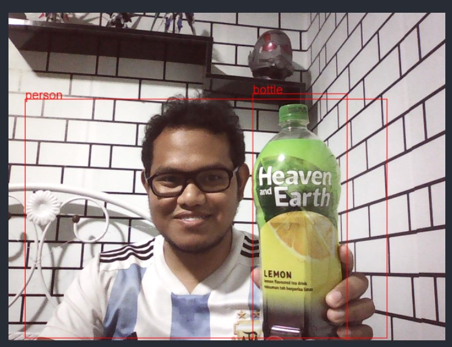
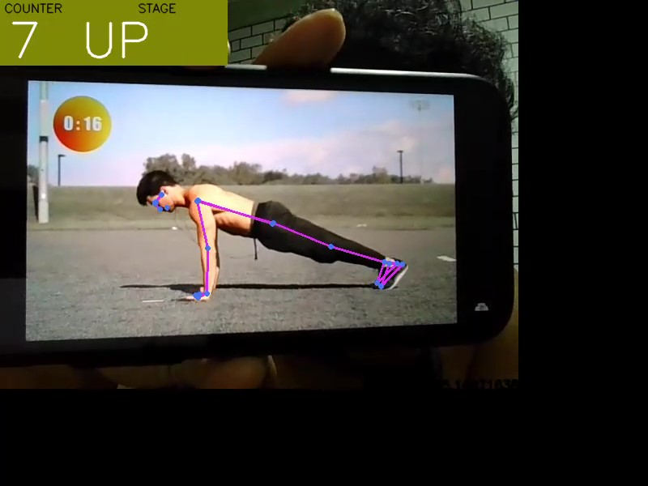

A certified data scientist and data engineer by Fusionex under Penjana program. Getting insights out of data is something
that I really like. Data visualization, supervised and unsupervised machine learning and deep learning are some techniques that I am using to achieve this.
I primarly uses Python but also have experience with C, C#, javascipt and html.


Credit card churning is a widespread phenomenon where people apply for multiple credit cards (or, more generally, open multiple credit lines) to take advntage of signup bonuses, with no intention of keeping all of them active in the long term. Credit institutions have therefore a strong interest in identifying churning customers and, more generally, predicting whether a client is gonna cancel their credit card or not. I have perform data exploration on a dataset of 10000 customers with a view towards this goal and then build a predicting model.
Marketing, as well known, is crucial for the growth and sustainability of any business. However, one of the key pain points for any marketing professionals is to know the customers and identify their needs. I have used K Means and DBSCAN clustering method to identify the client into several different cluster. From the model, we can group the customer into different type of customer using customer’s purchase and payment habits informations.

I am using the pre-trained coco ssd model from the tensorflow.js library to produce a simple app that can detect object.
The sinking of the Titanic is one of the most infamous shipwrecks in history. On April 15, 1912, during her maiden voyage, the widely considered “unsinkable” RMS Titanic sank after colliding with an iceberg. Unfortunately, there weren’t enough lifeboats for everyone onboard, resulting in the death of 1502 out of 2224 passengers and crew. While there was some element of luck involved in surviving, it seems some groups of people were more likely to survive than others. I use machine learning to create a model that predicts which passengers survived the Titanic shipwreck.

The Global Health Observatory (GHO) data repository under World Health Organization (WHO) keeps track of the health status as well as many other related factors for all countries. The datasets are made available to public for the purpose of health data analysis. The dataset related to life expectancy, health factors for 193 countries has been collected from the same WHO data repository website and its corresponding economic data was collected from United Nation website. Among all categories of health-related factors only those critical factors were chosen which are more representative. It has been observed that in the past 15 years , there has been a huge development in health sector resulting in improvement of human mortality rates especially in the developing nations in comparison to the past 30 years. Therefore, in this project I have considered data from year 2000-2015 for 193 countries for further analysis.

Market Basket Analysis is one of the key techniques used by large retailers to uncover associations between items. It works by looking for combinations of items that occur together frequently in transactions. To put it another way, it allows retailers to identify relationships between the items that people buy. Association Rules are widely used to analyze retail basket or transaction data and are intended to identify strong rules discovered in transaction data using measures of interestingness, based on the concept of strong rules.

I am using open cv to access video feed and mediapipe pose estimation model to create push up and curl counter. By calculating the angle between 3 landmarks (shoulder, elbow and wrist), I can determine the push up and curl stage whether up or down and create a counter when the stage of the pushup and curl changed.

The twitter dataset is mine using 'vaccines' as keyword to know public opinion on the vaccines whether mostly postive, negative or neutral. Sentiment analysis is conducted from TextBlob pretrain model using Spark Application on the dataset. Dataset is preprocessing by removing abbreviation and translate it from Malay language to English using google translator before conducting the sentiment analysis.